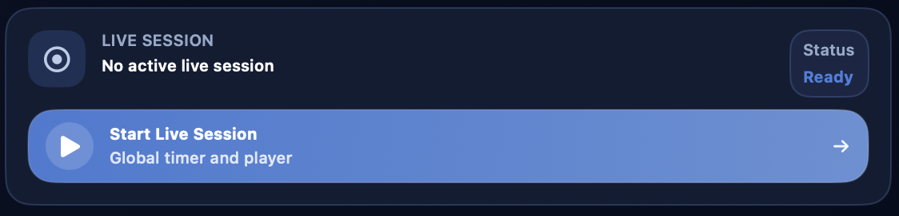

Aventura¶

A secção Aventura é o centro organizativo de uma campanha no DnDino. É aqui que nasce a estrutura principal do teu trabalho: o título da campanha, a sua identidade visual, as personagens associadas, as sessões, os locais, as imagens partilhadas, os mapas e os acessos rápidos aos combates.
Tip
Pensa na dashboard da aventura como o quartel-general da campanha: não é o sítio onde fazes tudo ao detalhe, mas sim o ponto a partir do qual chegas rapidamente a todas as áreas verdadeiramente operacionais.
Esta página explica o percurso principal:
- criação de uma nova aventura
- edição e gestão de uma aventura existente
- funcionamento da dashboard da aventura
- relação entre a dashboard e as subpáginas dedicadas
As áreas mais específicas, como Locais, Mapas conceptuais, Sessão em direto, Personagens, Imagens e Mapas, serão aprofundadas nas respetivas páginas dedicadas.
Para que serve uma aventura¶
No DnDino, uma aventura é o contentor principal de uma campanha ou de um arco narrativo. Serve para reunir, num único contexto:
- as personagens ligadas à campanha
- os locais e as missões
- as sessões textuais e em direto
- as imagens partilhadas
- os mapas associados aos locais
- os mapas conceptuais globais
- os combates que nascem em locais ligados à aventura
Uma aventura não é, por isso, apenas uma ficha descritiva, mas sim o ponto de entrada para toda a parte operacional da campanha.
Onde se cria uma aventura¶
A criação começa na lista de aventuras.
A partir desse ecrã podes:
- criar uma nova aventura com o botão
Nova - criar a primeira aventura com o grande botão central
Criar uma aventura, se a base de dados ainda estiver vazia - abrir uma aventura existente clicando na respetiva linha
- editar uma aventura existente
- clonar uma aventura já presente
- eliminar uma aventura
A lista também pode ser ordenada por:
- nome
- data de criação
- última modificação
Note
Quando ordenas por última modificação, o DnDino não olha apenas para a ficha da aventura, mas também para a atividade associada, como locais, sessões, personagens de aventura, mapas conceptuais e combates.
Criação de uma nova aventura¶
Quando abres o formulário de criação, o DnDino apresenta-te a informação principal da campanha.
Os campos principais são:
TítuloAutorAmbientaçãoDescrição breveEstado
O campo Estado usa um controlo segmentado e permite indicar se a aventura está:
- por começar
- em curso
- concluída
Descrição alargada¶
Por baixo da informação principal encontras também uma secção Descrição mais ampla.
Esta área serve para anotar uma apresentação mais completa da campanha, por exemplo:
- o tom da aventura
- o contexto narrativo
- os objetivos iniciais
- notas gerais para o Mestre
A descrição longa não se perde na dashboard: se existir, pode ser reaberta rapidamente mais tarde.
Capa e imagens da aventura¶
No formulário podes atribuir uma capa à aventura. A capa é usada como imagem representativa da campanha nos ecrãs principais.
Também podes adicionar imagens na secção Imagens da aventura. Estas imagens:
- permanecem ligadas à aventura
- não pertencem a um local específico
- podem ser mostradas rapidamente aos jogadores ou ao Mestre a partir da dashboard
Para cada imagem podes gerir:
- nome visível
- visibilidade para
Jogadores - visibilidade para
Mestre
Edição de uma aventura existente¶
Quando abres uma aventura existente em edição, o formulário é o mesmo da criação, mas com uma secção extra: Repor aventura.
Esta reposição não apaga a estrutura da campanha, mas limpa o estado atual de jogo. Em particular:
- remove todas as personagens de aventura ligadas
- elimina todas as sessões guardadas
- repõe locais e missões no estado inicial
- volta a colocar NPC e monstros com os PV máximos e sem condições
- reinicia os combates preparados sem apagar a respetiva estrutura
Esta função é útil quando queres reutilizar a estrutura de uma campanha ou voltar a colocar a aventura num estado limpo sem a reconstruir de raiz.
Clonagem e eliminação¶
Na lista de aventuras também podes:
Clonar uma aventura¶
A clonagem cria uma cópia da campanha através do serviço interno de duplicação. É útil quando queres:
- partir de uma estrutura semelhante
- reutilizar uma configuração base
- criar uma variante de uma campanha existente
Eliminar uma aventura¶
Quando eliminas uma aventura, o DnDino remove o registo principal e inicia também a limpeza dos recursos associados. Além disso, atualiza as referências das personagens globais para remover a ligação à aventura apagada.
Abertura da dashboard da aventura¶
Ao clicar numa aventura da lista, entras na respetiva dashboard, que é o verdadeiro centro operativo da campanha.
A dashboard está organizada como um ecrã de painéis:
- uma faixa superior com cabeçalho e controlo da sessão em direto
- duas colunas inferiores com cartões dedicados às várias áreas da campanha
A ordem dos painéis pode ser personalizada nas definições da aplicação.
Cabeçalho da dashboard¶
A parte superior da dashboard reúne a informação essencial da aventura:
- capa
- título
- estado
- descrição breve
- ambientação
- autor
Se a aventura também tiver uma descrição longa, surge um botão dedicado para a abrir num popover e lê-la sem sair da dashboard.
A partir daqui também podes entrar em Editar para voltar ao formulário da aventura e atualizar os respetivos dados.
Sessão em direto¶

Ao lado do cabeçalho encontra-se o painel Sessão em direto.
Esta secção serve para:
- iniciar uma nova sessão em direto para a aventura
- ver se uma sessão está em curso ou em pausa
- acompanhar o tempo decorrido
- colocar a sessão em pausa
- fechá-la e guardá-la
Quando a sessão em direto da aventura está ativa, o contexto global dos jogadores e os locais seguem esse contexto.
Se já existir uma sessão em direto aberta noutra aventura, a dashboard assinala-o claramente e não te deixa iniciar uma segunda em paralelo.
Os painéis da dashboard¶
Por baixo do cabeçalho, a dashboard mostra os painéis principais da aventura.
Atualmente são:
Locais e MissõesPersonagensSessõesImagensMapasMapas ConceptuaisEstatísticasMetadados
Tip
Nas definições é possível alterar tanto a coluna como a ordem dos painéis dentro da Dashboard Aventura.
Locais e Missões¶

Este painel é o ponto de entrada para a dashboard dos locais.
A partir daqui vês rapidamente:
- número total de locais
- número total de missões
- número de missões concluídas
Também podem surgir acessos rápidos para:
- o último local útil
- o último combate útil
Ao abrir este cartão entras na secção que gere:
- locais
- sublocais
- presenças
- imagens de local
- mapas
- mapas interativos
- combates ligados aos locais
Esta parte será descrita com mais detalhe na página dedicada a Locais.
Personagens¶

O painel Personagens mostra as personagens ligadas à campanha.
Aqui podes:
- ver as personagens de aventura já associadas
- adicionar novas
- curá-las rapidamente com
Curar tudo - abrir o seu estado contextual de campanha
Esta secção não substitui a ficha base da personagem: mostra a camada específica da campanha, com estado, PV e condições contextuais.
A diferença entre:
- ficha base
- personagem de aventura
- personagem de local
- participante de combate
será aprofundada na página dedicada a Personagens.
Sessões¶

O painel Sessões reúne:
- sessões textuais
- sessões em direto
- notas
- resumos
- linha temporal
A partir daqui também podes criar uma nova sessão textual. As sessões são, portanto, a memória narrativa e operacional da campanha.
Esta área será aprofundada na página dedicada à Sessão em direto e à gestão de sessões.
Estatísticas da Aventura¶


O painel Estatísticas abre uma janela dedicada à leitura da evolução da campanha.
Esta vista reúne os combates concluídos da aventura, incluindo os que foram terminados fora de uma sessão em direto, e organiza-os cronologicamente.
Entre os dados principais podes encontrar:
- número total de combates
- duração média dos encontros
- duração média das sessões
- inimigos derrotados
- personagens de aventura com mais dano causado
- personagens de aventura com mais dano sofrido
Os gráficos ajudam a ler a evolução ao longo do tempo:
- dano causado por combate
- dano sofrido por combate
- dano causado por dia
- dano sofrido por dia
- duração das sessões agrupada por dia
Nos gráficos diários podes alternar entre Todos e Por personagem. A vista por personagem usa uma linha por cada personagem de aventura envolvida; a legenda permite mostrar ou esconder personagens individuais quando o gráfico fica demasiado cheio.
Os valores numéricos podem ser mostrados ou ocultados com o controlo dedicado, para escolher entre legibilidade e detalhe.
Note
As classificações principais de dano focam-se nas personagens de aventura. NPCs e monstros continuam importantes em combate, mas nas estatísticas de longo prazo teriam um peso demasiado variável.
Imagens¶

O painel Imagens reúne as imagens globais da aventura, ou seja, aquelas que não estão ligadas a um local específico.
A partir daqui podes:
- adicionar imagens
- percorrê-las por páginas
- mostrá-las rapidamente aos jogadores
- mostrá-las rapidamente ao Mestre
Esta é a zona certa para todo o material visual “de campanha” que não pertence a um único local.
Mapas¶

O painel Mapas mostra todos os mapas ligados aos locais da aventura.
Os mapas não são adicionados diretamente aqui: aparecem na dashboard quando já foram associados a um local.
A partir deste cartão podes:
- percorrer os mapas da aventura
- mostrá-los a jogadores ou ao Mestre
- abrir diretamente o respetivo mapa interativo do local, se existir
Esta parte será aprofundada nas páginas dedicadas a Mapas e Mapas interativos.
Mapas Conceptuais¶

O painel Mapas Conceptuais reúne os mapas globais da aventura.
A partir daqui podes:
- ver quantos mapas conceptuais existem
- abri-los rapidamente
- criar um novo
Os mapas conceptuais são úteis para ligar ideias, locais, personagens e relações narrativas. Serão aprofundados na página dedicada.
Metadados¶
Se a visualização de metadados estiver ativa nas definições, surge também um painel técnico com:
- ID da aventura
- data de criação
- data da última modificação
É uma secção útil sobretudo para controlo, diagnóstico ou gestão avançada.
Relação com as subpáginas¶
A página Aventura é uma visão geral. A partir daqui, as páginas filhas aprofundam cada ferramenta operacional específica.
As subpáginas deste guia serão:
- Locais e Missões
- Mapas Conceptuais
- Estatísticas da Aventura
- Imagens
- Mapas
- Mapas interativos
- Sessão em direto
- Personagens
Na prática:
- esta página explica como nasce e como se estrutura uma aventura e como está organizada a Dashboard Aventura
- as páginas filhas explicam como cada secção interna é realmente usada
Quando usar esta secção¶
A secção Aventura é o ponto certo quando queres:
- criar uma nova campanha
- definir a capa, o estado e a descrição da aventura
- retomar o trabalho de uma campanha existente
- entrar na dashboard principal
- iniciar uma sessão em direto
- chegar rapidamente aos locais, personagens, sessões, imagens e mapas da campanha
- consultar estatísticas e gráficos dos combates concluídos